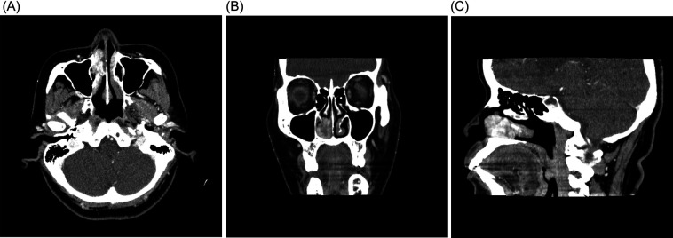
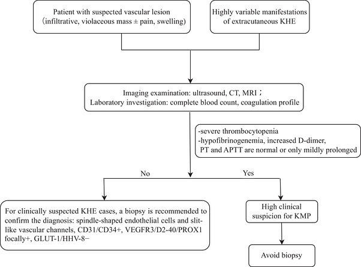
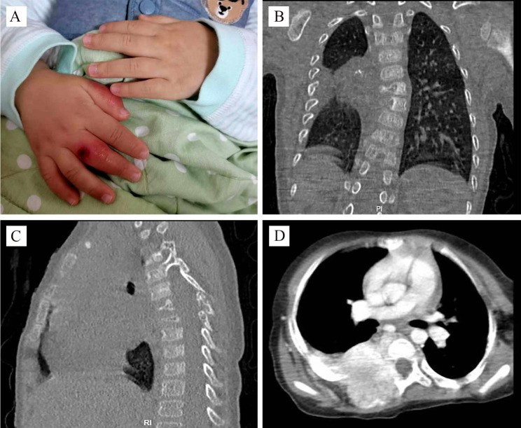

3099 — KHE ở người lớn và thể sâu (sau phúc mạc – trung thất – mũi xoang): không có KMP nhưng dễ nhầm sarcoma mạch / Adult & deep-seated kaposiform hemangioendothelioma
Tags: pattern:khoi-mo-mem pattern:u-mach-mau pattern:xam-lan vung:mo-mem vung:trung-that vung:sau-phuc-mac vung:mui protocol:MRI-co-can-quang
Mức chắc chắn (certainty): tổng hợp y văn (literature synthesis) — số liệu lấy từ một bài tổng quan có thuật toán chẩn đoán – điều trị (PMC13291430) và hai ca nguyên văn có ảnh, giấy phép CC BY (người lớn 59 tuổi: PMC13212465; trẻ 2 tuổi thể cạnh sống: PMC10655467). Không có thử nghiệm ngẫu nhiên; các ngưỡng điều trị là đồng thuận thực hành, chỗ suy luận được ghi rõ.
Câu chốt: KHE là u mạch máu giáp biên (borderline), không thoái triển tự nhiên — 2% các u mạch máu, 0,071/100.000 trẻ/năm (PMC13291430). Ba điều phân biệt bài này với KHE ở nhũ nhi (bài 3074):
- Thể sâu (deep type) không có tổn thương da → chẩn đoán muộn, hình ảnh giống sarcoma mô mềm/xương;
- KHE khởi phát ở người lớn gần như không có Kasabach–Merritt (KMP) — tổng quan ghi rõ "chưa có ca KMP nào được báo cáo ở KHE khởi phát người lớn" (PMC13291430) → tiểu cầu bình thường KHÔNG loại trừ KHE;
- Vì vậy câu hỏi lâm sàng đổi từ "truyền tiểu cầu thế nào" sang "khối này có phải sarcoma không, có cắt được không, sinh thiết có an toàn không".
1. Tổng quan bệnh học – cơ chế hình ảnh (TẠI SAO)
1.1 Dịch tễ và sinh bệnh học: vì sao "người lớn" là một bài riêng
- KHE là u mạch máu giáp biên theo ISSVA/WHO (trung gian ác tính), chiếm ~2% các u mạch máu; ~50% bẩm sinh, phần lớn xuất hiện trong năm đầu đời; thể hỗn hợp (nông + sâu) ~60%, thể sâu thuần túy chỉ nằm trong cơ/xương/khoang cơ thể, không có dấu hiệu da nên chẩn đoán muộn (PMC13291430).
- Sinh bệnh học: tăng sinh lympho–mạch máu qua trục VEGF-C/VEGFR-3 và Angiopoietin-2/TIE2 → hội tụ về PI3K/AKT/mTOR; đột biến soma GNA14, PIK3CA, RAD50 đã được mô tả → giải thích vì sao sirolimus (ức chế mTOR) là thuốc đầu tay (PMC13291430).
- Vì sao người lớn hiếm và không có KMP: KMP là hiện tượng giữ – hoạt hóa tiểu cầu trong lòng mạch u, phụ thuộc thể tích u lớn + tuổi rất nhỏ; cả ba yếu tố nguy cơ (tuổi khởi phát ≤ 1 tháng, u ≥ 6 cm, vị trí sâu/ngoài chi) đều nghiêng về nhũ nhi. Tổng quan ghi KMP ~40% tổng số KHE nhưng không có ca nào ở KHE người lớn (PMC13291430). Ca người lớn 59 tuổi trong bài này có tiểu cầu, PT, aPTT, INR hoàn toàn bình thường (PMC13212465).
1.2 Vật lý hình ảnh: vì sao KHE "sáng T2 lốm đốm" và "ngấm thuốc không đều"
| Thành phần mô bệnh | Thể hiện trên MRI/CT | Giải thích vật lý |
|---|---|---|
| Khe mạch dạng khe (slit-like) + tế bào nội mô hình thoi | T1 đồng/giảm tín hiệu so với cơ; T2 tăng không đồng nhất | Nhiều nước trong lòng mạch và mô đệm → T2 dài; tế bào thoi xếp đặc làm tín hiệu không thuần nhất |
| Xơ hóa (fibrosis) + hemosiderin | Ổ giảm tín hiệu T2 rải rác trong khối | Collagen và hemosiderin rút ngắn T2* → đốm tối; hemosiderin còn làm blooming trên SWI |
| Mạng mạch giàu dòng chảy | Ngấm thuốc lan tỏa nhưng không đều thì động mạch → muộn; flow void trong khối | Thuốc vào nhanh qua mạng mao mạch dày; vùng xơ/hoại tử ngấm chậm hơn |
| Xâm lấn mô mỡ – cơ – xương | Bờ không rõ, dày da, stranding mỡ dưới da; xương: tiêu xương thể thấm (permeative) + thành phần mô mềm ngấm thuốc | U mọc theo vách cân và khoang cơ, không tạo vỏ; tế bào u tiết enzyme phân hủy xương → tiêu xương không vôi hóa |
- Siêu âm (bước đầu): khối echo hỗn hợp, bờ không rõ, tăng sinh mạch; trên 3D color Doppler mô tả kiểu "branch-shape"; tới 40% xâm lấn cơ kế cận (PMC13291430).
- CT: tổn thương giảm/đồng đậm độ, ngấm thuốc; CT có cản quang là cách tốt nhất thấy tiêu xương, mòn xương, tái tạo xương (PMC13291430). Ca cạnh sống 2 tuổi: khối cạnh sống T3–T6, phá hủy thân đốt + cung sau + nhiều sườn, ngấm thuốc lan ra cơ lưng và ống sống (PMC10655467) — hình ảnh không thể phân biệt với sarcoma xương nếu chỉ nhìn CT.
- Ngưỡng định lượng cần nhớ: KMP
40%; tử vong do KMP chưa điều trị 20–30%, tử vong chung thời kỳ trước sirolimus 10–30%, nay < 2%; phù bạch mạch mạn **10%**; hạn chế vận động ~70% trong 2 năm nếu có phá hủy xương (PMC13291430).
2. Mẫu hình + chẩn đoán phân biệt theo vị trí và tuổi (Gamut)
- Người lớn – khối mô mềm ngấm thuốc, không đau nhiều, không có dấu da: KHE (hiếm) · angiosarcoma · epithelioid hemangioendothelioma (EHE) · sarcoma mô mềm khác (synovial, UPS) · solitary fibrous tumor · lymphoma · di căn.
- Mũi–xoang (ca người lớn trong bài): KHE · ung thư biểu mô vảy · u nhú đảo ngược · u mạch máu (hemangioma) · u xơ mạch vòm họng (JNA) ở nam trẻ · u hắc tố niêm mạc.
- Cạnh sống – trung thất – sau phúc mạc ở trẻ: KHE · u nguyên bào thần kinh (neuroblastoma) · ganglioneuroma · sarcoma Ewing · lymphoma · teratoma · kaposiform lymphangiomatosis (KLA) · desmoid.
- Có tổn thương xương: KHE · Ewing · osteosarcoma · di căn neuroblastoma · lymphoma · u tế bào khổng lồ · abcès xương.
- Mnemonic "VASCULAR-BORDERLINE" (theo 4 câu hỏi): (1) tuổi (nhũ nhi → KHE/KMP; người lớn → angiosarcoma/EHE); (2) da (có mảng tím → thể hỗn hợp; không có → thể sâu, dễ muộn); (3) xương (tiêu xương thấm + mô mềm ngấm thuốc); (4) xét nghiệm (tiểu cầu/fibrinogen chỉ hữu ích ở nhũ nhi).
3. Bảng so sánh phân biệt (ma trận đối chiếu)
| Thực thể (entity) | Hình ảnh điển hình | Chốt vào (rule-in) | Chốt loại (rule-out) | Gợi ý xác nhận |
|---|---|---|---|---|
| KHE người lớn (bài này) | Khối mô mềm bờ không rõ, T2 tăng không đồng nhất, ổ tối T2 (xơ/hemosiderin), ngấm thuốc lan tỏa; có thể tiêu xương; tiểu cầu bình thường | Bờ xâm lấn + ổ tối T2 + ngấm thuốc đều–không đều + không có dấu da; mô học: tế bào thoi, khe mạch, CD31/CD34/D2-40 dương, GLUT1 âm | Không có dấu hiệu tăng sinh mạch ác tính (hoại tử rộng, xuất huyết tự phát, xâm lấn da loét) → nghĩ angiosarcoma; không thoái triển theo thời gian → loại u máu nhũ nhi | Sinh thiết core (không FNA) + IHC; MRI có cản quang |
| KHE nhũ nhi có KMP (bài 3074) | Mảng tím + khối sâu; tiểu cầu < 100 × 10⁹/L, fibrinogen thấp, D-dimer cao; flow void | Giảm tiểu cầu tiêu thụ + khối mạch máu ở nhũ nhi | Tiểu cầu bình thường ở người lớn không loại trừ KHE — đây là bẫy chính | CBC + fibrinogen + D-dimer; sirolimus |
| Angiosarcoma | Khối hoại tử – xuất huyết, bờ thấm, ngấm thuốc mạnh không đều, hay ở da đầu/vùng xạ/chi dưới; xương: tiêu hủy nhanh | Hoại tử rộng + xuất huyết + tuổi lớn + tiền sử xạ | Bờ tương đối rõ, không hoại tử, tuổi trẻ → ít nghĩ angiosarcoma | Sinh thiết + IHC (CD31, ERG, c-MYC khuếch đại ở thể thứ phát) |
| EHE (epithelioid hemangioendothelioma) | Nhiều nốt ở phổi/gan/xương, bờ rõ, "halo sign" (vòng xơ), vôi hóa trong 20% | Nhiều ổ + vôi hóa + halo | Một khối đơn độc xâm lấn mô mềm → ít nghĩ EHE | Sinh thiết: WWTR1–CAMTA1 |
| Kaposiform lymphangiomatosis (KLA) | Trung thất/sau phúc mạc, dịch bạch huyết, tiêu xương, giảm tiểu cầu nhẹ | Nang dịch bạch huyết + tiêu xương + D2-40 dương mạnh | Khối đặc ngấm thuốc mạnh, không nang → nghĩ KHE | MRI + sinh thiết; KRAS |
| U máu nhũ nhi (infantile hemangioma) | Xuất hiện sau sinh 2–6 tuần, thoái triển, GLUT1 dương, đáp ứng propranolol | GLUT1 dương + thoái triển | Có từ lúc sinh, không thoái triển, GLUT1 âm → KHE/tufted angioma | GLUT1; theo dõi 12–18 tháng |
| Sarcoma Ewing (xương/cạnh sống) | Tiêu xương thấm, phản ứng màng xương "vỏ hành", khối mô mềm lớn | Tuổi 10–20 + tiêu xương thấm + màng xương "onion-skin" | Vôi hóa trong khối, bờ rõ → ít Ewing | Sinh thiết: CD99, EWSR1 |
| Neuroblastoma (trẻ < 5 tuổi) | Cạnh sống/thượng thận, vôi hóa 80–90%, chèn ép tủy, di căn xương | Vôi hóa + catecholamine niệu + MIBG dương | Không vôi hóa, chỉ một khối mô mềm → không loại trừ, nhưng ít điển hình | MIBG, NSE, ferritin, HVA/VMA |

CT có cản quang (A trục, B coronal, C sagittal): khối 3 × 2 cm xuất phát từ cuốn mũi dưới phải, đẩy vào vách mũi và ra sau tới giữa ổ mũi; không phá hủy xương. Chẩn đoán sau mổ: KHE, không KMP. Nguồn: Front Surg 2026 (PMC13212465), CC BY 4.0.4. Protocol chụp + thuật toán xử trí
4.1 Chụp
- MRI là phương thức chọn (PMC13291430): T1W, T2W fat-sat/STIR, DWI, T1W fat-sat sau tiêm, thêm MRA khi khối lớn/nghi mạch lớn. Cần mô tả: bờ, độ sâu (da–mỡ–cân–cơ–xương), tổn thương da, thâm nhiễm ống sống, flow void, ổ tối T2.
- CT có cản quang khi nghi xương (tiêu xương, mòn, tái tạo) hoặc cần đánh giá mũi–xoang/nền sọ.
- Siêu âm Doppler cho tổn thương nông và theo dõi; không đủ để đo độ sâu (PMC13291430).
- Xét nghiệm trước sinh thiết: CBC, fibrinogen, PT/aPTT, D-dimer — để phát hiện KMP (chỉ có ý nghĩa ở nhũ nhi, nhưng vẫn làm vì rẻ và đổi thái độ sinh thiết).
- Sinh thiết: core needle, tránh vùng hoại tử; FNA không đủ vì cần cấu trúc khe mạch + IHC. Ở khối cạnh sống/trung thất, sinh thiết dưới CT/US và cân nhắc nguy cơ chảy máu (KHE rất giàu mạch).
4.2 Điều trị theo bối cảnh
flowchart TD
A["Khối mô mềm ngấm thuốc, nghi KHE"] --> B{"Tiểu cầu / fibrinogen bất thường?"}
B -->|"Có (nhũ nhi, u lớn)"| C["Coi như KHE + KMP: sirolimus ± corticoid, KHÔNG truyền tiểu cầu theo con số"]
B -->|"Không (người lớn / thể sâu)"| D{"Cắt được toàn bộ, chức năng chấp nhận?"}
D -->|"Có"| E["Cắt toàn bộ + xác nhận mô học; theo dõi MRI 3–6 tháng"]
D -->|"Không"| F["Sirolimus 0,8 mg/m2 × 2/ngày, đích 8–15 ng/mL; đánh giá 3 tháng"]
F --> G{"Đáp ứng?"}
G -->|"Có"| H["Duy trì ≥ 12 tháng, giảm liều chậm"]
G -->|"Không"| I["Vincristine ± phối hợp; xạ/embolization chọn lọc"]

Sơ đồ gốc: tiếp cận khối nghi KHE → xét nghiệm đông máu → nhánh có/không KMP → CT/MRI và sinh thiết. Nguồn: Pediatr Investig 2026 (PMC13291430), CC BY-NC-ND 4.0, dùng nguyên bản không chỉnh sửa.- Sirolimus: đầu tay cho mọi KHE không cắt được; 0,8 mg/m² × 2/ngày, đích 8–15 ng/mL (có nhóm dùng 5–8 ng/mL; sơ sinh 2–6 ng/mL vì CYP3A4 chỉ 30–40% người lớn); đáp ứng > 90%, huyết học cải thiện sau 4–7 ngày (PMC13291430). Ở người lớn, dữ liệu này là ngoại suy (không có thử nghiệm riêng) — khối khu trú vẫn ưu tiên cắt toàn bộ trước.
- Vincristine: đáp ứng 60–80% nhưng khởi phát chậm 4–5 tuần (PMC13291430).
- Cắt toàn bộ là lựa chọn khi khu trú: ca mũi người lớn 3 × 2 cm được cắt nội soi, không tái phát sau 5 tháng và 1 năm (PMC13212465). Cắt không toàn bộ → tái phát sớm (ca ống tai ngoài tái phát trong 1 tháng, dẫn trong PMC13212465).
- Propranolol không phải thuốc của KHE (khác u máu nhũ nhi): hiệu quả kém, đặc biệt khi có KMP (PMC13291430).
4.3 Theo dõi
- MRI 3–6 tháng/lần trong 2 năm đầu, sau đó theo đáp ứng; KHE không tự thoái triển, nên "khối nhỏ lại" là do điều trị.
- Tầm soát di chứng: hạn chế vận động (~70% nếu phá hủy xương trong 2 năm), phù bạch mạch (~10%), đau mạn (PMC13291430).
5. Biến thể bình thường và cạm bẫy
- Bẫy 1 — "không giảm tiểu cầu thì không phải KHE": đúng với nhũ nhi, sai với người lớn. Tổng quan khẳng định chưa có KMP ở KHE người lớn (PMC13291430); ca 59 tuổi có CBC và đông máu bình thường (PMC13212465).
- Bẫy 2 — "không có tổn thương da thì không phải u mạch": thể sâu không có dấu da, biểu hiện bằng chèn ép (tắc ruột, ứ nước thận, đau/giảm vận động) (PMC13291430).
- Bẫy 3 — gọi là sarcoma rồi mổ/xạ quá mức: tiêu xương thấm + khối mô mềm lớn trên CT không phân biệt được với Ewing/osteosarcoma (ca 2 tuổi, PMC10655467). Cần sinh thiết trước, không dựa vào hình ảnh.
- Bẫy 4 — sinh thiết ở khối nhiều mạch: nguy cơ chảy máu; dùng core nhỏ, dưới hướng dẫn, chuẩn bị cầm máu; tránh chọc vào vùng xuất huyết/hoại tử vì dễ lấy nhầm mô.
- Bẫy 5 — "u mạch thì lành": KHE không thoái triển, tái phát sau cắt không toàn bộ (PMC13291430, PMC13212465); theo dõi phải bằng MRI, không chỉ siêu âm.
- Bẫy 6 — nhầm với KLA: KLA có nang dịch bạch huyết + tiêu xương + tràn dưỡng chấp, không phải khối đặc ngấm thuốc mạnh; D2-40 dương mạnh ở cả hai → cần mô học + gen.
6. Tự lượng giá — Blind Quiz
Ca 1 — Nữ 59 tuổi, nghẹt mũi phải và chảy máu mũi nhiều tháng. Nhìn CT trước, mô tả.
- Gợi ý: không sốt, không chấn thương; xét nghiệm máu bình thường.
- Hỏi: khối xuất phát ở đâu, có phá xương không? 3 chẩn đoán phân biệt? Dấu hiệu nào không giúp loại KHE?
Bấm để hiện đáp án
- Dấu hiệu: khối ngấm thuốc 3 × 2 cm từ cuốn mũi dưới phải, lấp ống mũi dưới, đẩy vách mũi, không phá hủy xương; không vôi hóa.
- Chẩn đoán: KHE thể mũi ở người lớn — mô học: tế bào thoi xếp quanh khe mạch, CD31/CD34 dương; không KMP (tiểu cầu/PT/aPTT/INR bình thường).
- Điều trị: cắt nội soi toàn bộ, không tái phát sau 5 tháng và 1 năm.
- Chốt: tiểu cầu bình thường không loại trừ KHE ở người lớn; phân biệt với SCC/u nhú đảo ngược cần sinh thiết.
- Nguồn ảnh: Front Surg 2026, PMC13212465, CC BY 4.0 (Alkholaiwi F, Yun Choi J).
Ca 2 — Bé trai 2 tuổi, sưng và tím bàn tay phải, tiểu cầu thấp. CT ngực dưới đây:

- Hỏi: mô tả tổn thương xương và phần mô mềm; vì sao không được kết luận sarcoma từ CT? Xét nghiệm nào chốt hướng đi?
Bấm để hiện đáp án
- Dấu hiệu: khối cạnh sống T3–T6, phá hủy thân đốt, cung sau và nhiều sườn, ngấm thuốc lan vào cơ lưng và ống sống; kèm tím/loét đầu chi do hiện tượng Raynaud.
- Chẩn đoán: KHE thể sâu + KMP (tiểu cầu thấp) — khối xâm lấn nhưng mô học là u mạch máu giáp biên, không phải sarcoma.
- Chốt: sinh thiết + IHC (CD31/CD34/D2-40 dương, GLUT1 âm); không mổ lớn dựa trên CT; điều trị sirolimus (đích 8–15 ng/mL; nhũ nhi/trẻ nhỏ có thể 5–8).
- Nguồn ảnh: BMC Pediatr 2023, PMC10655467, CC BY 4.0 (Liu L et al.).
Bài liên quan chéo
- 3074 – KHE & Kasabach–Merritt: khối tím lan sâu + tiểu cầu tụt (thể nhũ nhi, KMP, truyền tiểu cầu)
- 3072 – Tái phát u máu nhũ nhi sau ngừng propranolol (vì sao propranolol không dùng cho KHE)
- 741 – Dị dạng mạch máu đầu–cổ ở trẻ: ISSVA 2018 (phân loại u/dị dạng mạch máu)
- 3048 – U máu gan ở nhũ nhi: propranolol & suy tim do shunt
- 1602 – Hemangioma & tổn thương mạch lành tính của vú vs angiosarcoma (ma trận lành–ác của u mạch)
- 1804 – Suy giáp tiêu thụ do D3 lạc vị (u mạch máu ngoài gan)
Ảnh
images/3099_khe-nguoi-lon_CT_PMC13212465-fsurg13-g001.jpg— CT mũi xoang người lớn 59 tuổi, CC BY 4.0.images/3099_khe-nguoi-lon_CT_PMC10655467-fig1.jpg— CT ngực trẻ 2 tuổi, thể cạnh sống + KMP, CC BY 4.0.images/3099_khe-nguoi-lon_SoDo_PMC13291430-PED4-g003.jpg— sơ đồ thuật toán chẩn đoán KHE, CC BY-NC-ND 4.0 (dùng nguyên bản, không chỉnh sửa).- Nguồn + giấy phép từng ảnh:
images/CREDITS.md.
Không dùng để chẩn đoán độc lập khi chưa có người hướng dẫn.